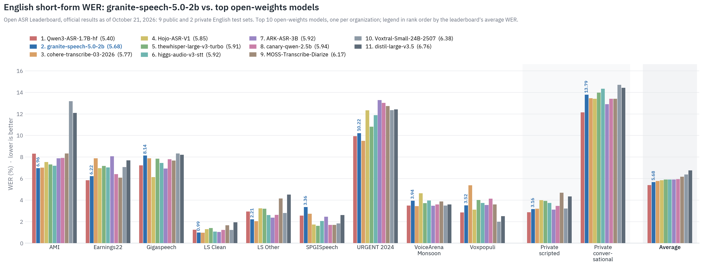
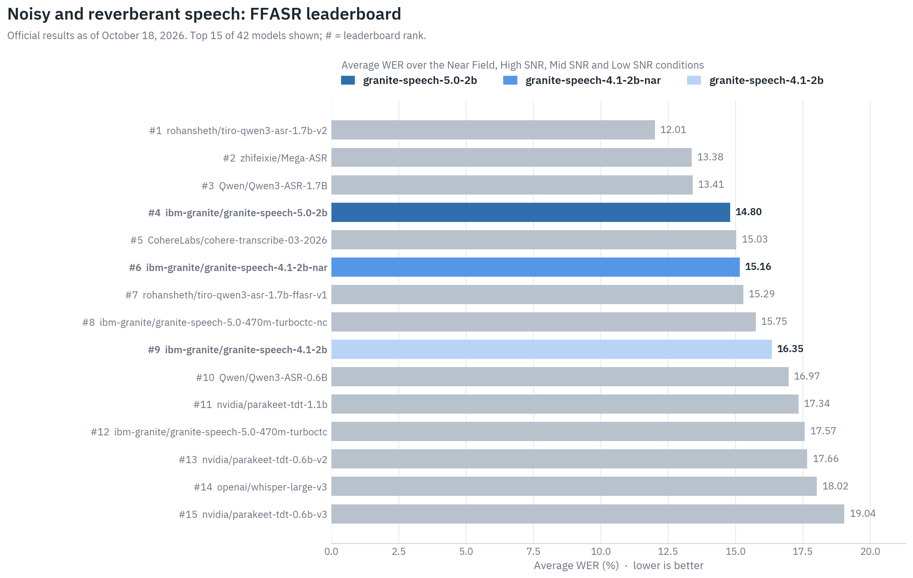
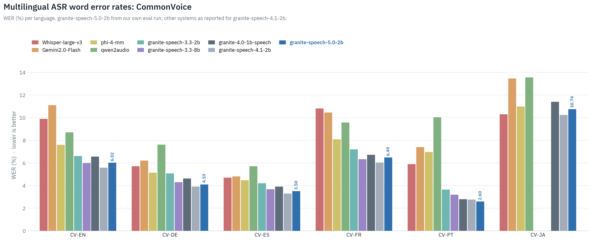
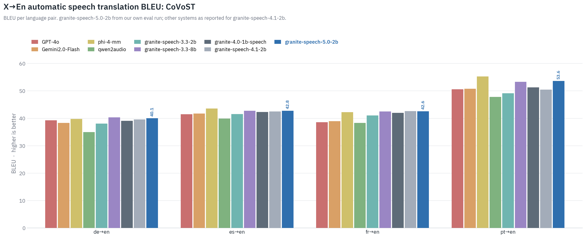
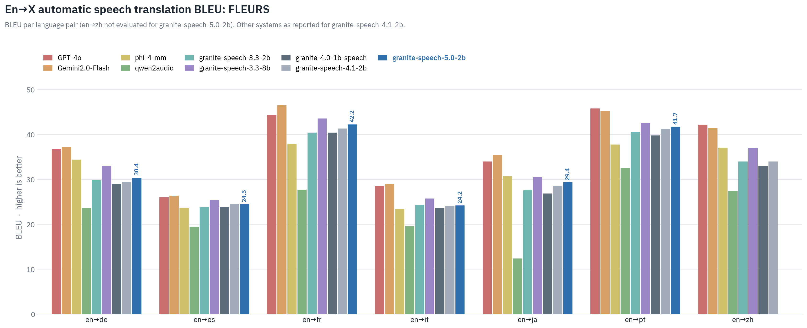
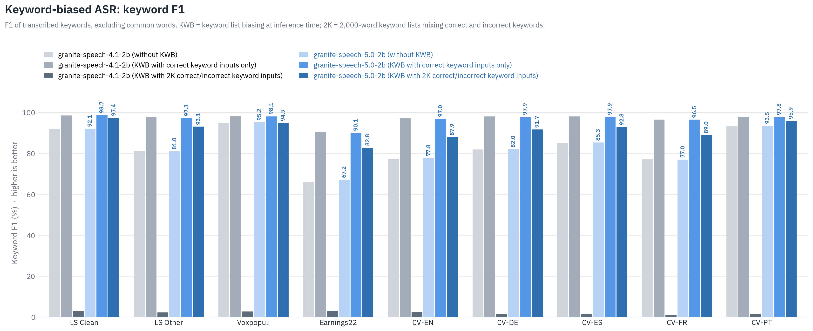

Granite-Speech-5.0-2B
Model Summary: Granite Speech 5.0 2B is a compact and efficient speech-language model, specifically designed for multilingual automatic speech recognition (ASR) and bidirectional automatic speech translation (AST) for English, French, German, Spanish, Portuguese and Japanese.
The model was trained on 390,000 hours of audio from public corpora for ASR and AST as well as synthetic datasets tailored to support Japanese ASR, keyword-biased ASR and speech translation. Granite Speech 5.0 2B was trained by modality aligning an intermediate checkpoint of granite-4.0-1b-base to speech on publicly available open source corpora containing audio inputs and text targets. Compared to its predecessor granite-speech-4.1-2b, this model has the same parameter count and provides additional capabilities and improvements:
- Higher transcription accuracy for English short-form ASR and increased robustness to noise, reverberation and distant microphone speech
- Supports input language id prompting for multilingual ASR
- Improved long-form and conversational speech translation
- Increased keyword list size (up to 2000) for multilingual keyword-biased ASR and AST
Evaluations:
We evaluated granite-speech-5.0-2b on standard English ASR benchmarks from the Open ASR leaderboard (official results as of October 21, 2026):

Performance on noisy and reverberant speech from the FFASR leaderboard (official results as of October 18, 2026):

We also evaluated multilingual ASR on CommonVoice, as well as X->En (CoVoST) and En->X (FLEURS) automatic speech translation, against other speech-language models and dedicated ASR and AST systems:



We evaluated the model’s keyword list biasing (KWB) capability by comparing performance with and without KWB applied at inference time. We report the F1 scores of transcribed keywords during ASR tasks, excluding common words from the evaluation.

We also evaluated our model on a variety of corpora to assess its punctuation and capitalization capabilities. We report the metrics as defined in LibriSpeech-PC. PER (punctuation error rate) measures errors in the insertion, deletion, or substitution of punctuation marks (periods, commas, and question marks). Cap-F1 (capitalization F1) measures how accurately the model capitalizes relevant words in the output. Note that our Cap-F1 is computed on Levenshtein-aligned matching word pairs rather than fully matching sentences, allowing evaluation even in the presence of ASR errors.
| Test Set | PER 4.1-2b (↓) | PER 5.0-2b (↓) | Cap-F1 4.1-2b (↑) | Cap-F1 5.0-2b (↑) |
|---|---|---|---|---|
| LScln | 25.70 | 23.20 | 89.71 | 90.16 |
| LSoth | 22.27 | 21.22 | 91.26 | 91.65 |
| VoxPopuli | 24.86 | 23.70 | 95.35 | 95.07 |
| Earnings-22 | 22.87 | 21.64 | 95.19 | 94.98 |
| CV-EN | 9.13 | 9.18 | 96.75 | 96.96 |
| CV-DE† | 3.66 | 3.65 | 99.50 | 99.51 |
| CV-ES | 11.61 | 11.46 | 95.68 | 95.62 |
| CV-FR | 11.00 | 11.43 | 97.25 | 97.20 |
| CV-PT | 7.86 | 7.53 | 98.51 | 98.48 |
† We report a Cap-F1 of 99.51 on German, where noun capitalization is required.
Release Date: October 20, 2026
License: Apache 2.0
Supported Languages: English, French, German, Spanish, Portuguese, Japanese
Intended Use: The model is intended to be used in enterprise applications that involve processing of speech inputs. In particular, the model is well-suited for English, French, German, Spanish, Portuguese and Japanese speech-to-text and speech translations to and from English for the same languages, plus English-to-Italian and English-to-Mandarin.
Usage:
Granite Speech model is supported natively in transformers>=4.52.1. For best results, transcribe audio in segments of up to ~2 minutes; split longer recordings (e.g. with VAD) before decoding.
Usage with transformers
First, make sure to install a recent version of transformers:
shellpip install transformers torchaudio soundfile
Then run the code:
pythonimport torch import torchaudio from huggingface_hub import hf_hub_download from transformers import AutoModelForSpeechSeq2Seq, AutoProcessor device = "cuda" if torch.cuda.is_available() else "cpu" model_name = "ibm-granite/granite-speech-5.0-2b" processor = AutoProcessor.from_pretrained(model_name) tokenizer = processor.tokenizer model = AutoModelForSpeechSeq2Seq.from_pretrained( model_name, device_map=device, torch_dtype=torch.bfloat16 ) # Load audio audio_path = hf_hub_download(repo_id=model_name, filename="multilingual_sample.wav") wav, sr = torchaudio.load(audio_path, normalize=True) assert wav.shape[0] == 1 and sr == 16000 # mono, 16kHz # Create text prompt user_prompt = "<|audio|>transcribe the speech with proper punctuation and capitalization." chat = [ {"role": "user", "content": user_prompt}, ] prompt = tokenizer.apply_chat_template(chat, tokenize=False, add_generation_prompt=True) # Run the processor + model model_inputs = processor(prompt, wav, device=device, return_tensors="pt").to(device) model_outputs = model.generate( **model_inputs, max_new_tokens=200, do_sample=False, num_beams=1 ) # Transformers includes the input IDs in the response num_input_tokens = model_inputs["input_ids"].shape[-1] new_tokens = model_outputs[0, num_input_tokens:].unsqueeze(0) output_text = tokenizer.batch_decode( new_tokens, add_special_tokens=False, skip_special_tokens=True ) print(f"STT output = {output_text[0]}")
Usage with vLLM
First, make sure to install vLLM:
shellpip install vllm
- Code for offline mode:
pythonfrom transformers import AutoTokenizer from vllm import LLM, SamplingParams from vllm.assets.audio import AudioAsset model_id = "ibm-granite/granite-speech-5.0-2b" tokenizer = AutoTokenizer.from_pretrained(model_id) def get_prompt(question: str, has_audio: bool): """Build the input prompt to send to vLLM.""" if has_audio: question = f"<|audio|>{question}" chat = [ { "role": "user", "content": question } ] return tokenizer.apply_chat_template(chat, tokenize=False) model = LLM( model=model_id, max_model_len=2048, # This may be needed for lower resource devices. limit_mm_per_prompt={"audio": 1}, ) question = "can you transcribe the speech into a written format?" prompt_with_audio = get_prompt( question=question, has_audio=True, ) audio = AudioAsset("mary_had_lamb").audio_and_sample_rate inputs = { "prompt": prompt_with_audio, "multi_modal_data": { "audio": audio, } } outputs = model.generate( inputs, sampling_params=SamplingParams( temperature=0.0, max_tokens=64, ), ) print(f"Audio Example - Question: {question}") print(f"Generated text: {outputs[0].outputs[0].text}")
- Code for online mode:
python""" Launch the vLLM server with the following command: vllm serve ibm-granite/granite-speech-5.0-2b \ --api-key token-abc123 \ --max-model-len 2048 """ import base64 import requests from openai import OpenAI from vllm.assets.audio import AudioAsset # Modify OpenAI's API key and API base to use vLLM's API server. openai_api_key = "token-abc123" openai_api_base = "http://localhost:8000/v1" client = OpenAI( # defaults to os.environ.get("OPENAI_API_KEY") api_key=openai_api_key, base_url=openai_api_base, ) model_name = "ibm-granite/granite-speech-5.0-2b" # Any format supported by librosa is supported audio_url = AudioAsset("mary_had_lamb").url # Use base64 encoded audio in the payload def encode_audio_base64_from_url(audio_url: str) -> str: """Encode an audio retrieved from a remote url to base64 format.""" with requests.get(audio_url) as response: response.raise_for_status() result = base64.b64encode(response.content).decode("utf-8") return result audio_base64 = encode_audio_base64_from_url(audio_url=audio_url) question = "can you transcribe the speech into a written format?" chat_completion_with_audio = client.chat.completions.create( messages=[{ "role": "user", "content": [ { "type": "text", "text": question }, { "type": "audio_url", "audio_url": { # Any format supported by librosa is supported "url": f"data:audio/ogg;base64,{audio_base64}" }, }, ], }], temperature=0.0, max_tokens=64, model=model_name, ) print(f"Audio Example - Question: {question}") print(f"Generated text: {chat_completion_with_audio.choices[0].message.content}")
Usage with the hosted Inference Endpoint
A Hugging Face Inference Endpoint serving this model with vLLM is available, so you can try it without any local setup. It exposes the OpenAI-compatible API, so the same request format as the vLLM online mode above applies. The endpoint scales to zero when idle, so the first request may take a few minutes while it starts up.
pythonimport os import base64 import requests from openai import OpenAI hf_token = os.environ["HF_TOKEN"] client = OpenAI( base_url="https://6ada5c5e69a00298cd4768e9.endpoints.huggingface.cloud/v1", api_key=hf_token, ) # 16 kHz mono audio, up to ~2 minutes audio_url = "https://huggingface.co/ibm-granite/granite-speech-5.0-2b/resolve/main/multilingual_sample.wav" audio_base64 = base64.b64encode(requests.get(audio_url).content).decode("utf-8") question = "transcribe the speech with proper punctuation and capitalization." chat_completion = client.chat.completions.create( model="ibm-granite/granite-speech-5.0-2b", messages=[{ "role": "user", "content": [ {"type": "text", "text": question}, {"type": "audio_url", "audio_url": {"url": f"data:audio/wav;base64,{audio_base64}"}}, ], }], temperature=0.0, max_tokens=512, ) print(chat_completion.choices[0].message.content)
Usage with llama.cpp
Installation instructions for macOS using homebrew:
shellbrew install llama.cpp
- Offline mode:
shellllama-cli -st -hf ibm-granite/granite-speech-5.0-2b-GGUF:Q8_0 --audio "audio.wav" -p "transcribe the speech with proper punctuation and capitalization."
- Online mode:
shellllama-server -hf ibm-granite/granite-speech-5.0-2b-GGUF:Q8_0 --port 9797
Then launch a request with:
shellcurl http://localhost:9797/v1/audio/transcriptions -F "model=ibm-granite/granite-speech-5.0-2b-GGUF:Q8_0" -F "file=@audio.wav" -F "prompt=transcribe the speech with proper punctuation and capitalization." | jq -r .text
We recommend Q8_0, which matches the unquantized model in our tests; lower-bit quantizations lose accuracy on audio longer than about a minute.
Usage with mlx-audio for Apple Silicon M series chips
Install a recent version of mlx-audio (0.5.9 or later) together with jinja2, which mlx-audio needs for the chat template but does not install itself:
shellpip install -U mlx-audio jinja2
Sample use:
shellpython -m mlx_audio.stt.generate --model ibm-granite/granite-speech-5.0-2b --verbose --audio "audio.wav" --output-path "transcript"
Preferred prompt by task:
| Task | Prompt | Notes |
|---|---|---|
| ASR (raw transcripts) | ``can you transcribe the speech into a written format?`` | Multilingual prompts supported e.g. ``Pouvez‑vous reconnaître le contenu de la parole ?`` |
| ASR (with punctuation) | ``transcribe the speech with proper punctuation and capitalization.`` | Multilingual prompts supported e.g. ``Transcrivez la parole avec une ponctuation et des majuscules appropriées.`` |
| ASR (with keyword biasing) | ``transcribe the speech to text. Keywords: <kw1>, <kw2>, ...`` | Multilingual prompts supported e.g. ``¿Puedes transcribir el habla en formato escrito? Palabras clave: <kw1>, <kw2>, ...`` |
| ASR (with language ID) | ``The speech is in <language>. Transcribe it exactly; do not translate. can you transcribe the speech into a written format?`` | ``<language>`= English, French, German, Spanish, Portuguese, Japanese. Also supported with the prompt in other languages, naming the language in that language, e.g. `El audio esta en alemán. Transcribe exactamente; no traduzcas. ¿Puedes transcribir el habla en formato escrito?` or `ドイツ語の音声です。翻訳せず、聞こえた通りに文字に起こしてください。音声を文字に起こしてください。`` |
| AST (raw transcripts) | ``translate the speech to <language>.`` | ``<language>`= English, French, German, Spanish, Japanese, Italian, Mandarin. Multilingual prompts supported e.g. `Écoutez la parole et traduisez-la en anglais.`` |
| AST (with punctuation) | ``translate the speech to <language> with proper punctuation and capitalization.`` | Only English prompt supported |
| AST (with keyword biasing) | ``translate the speech to <language>. Keywords: <kw1>, <kw2>, ...`` | Multilingual prompts supported e.g. ``Escucha el habla y tradúcela a inglés. Palabras clave: <kw1>, <kw2>, ...`` |
Model Architecture:
The architecture of granite-speech-5.0-2b consists of the following components:
(1) Speech encoder: 16 conformer blocks trained with Connectionist Temporal Classification (CTC) with two classification heads (characters and BPE units) on the subset containing only ASR corpora with unpunctuated transcripts (see configuration below). The character vocabulary consists of the first 256 ASCII entries for the European languages plus a 92 phonetic Katakana character set for Japanese whereas the BPE units come from the granite 4.0 tokenizer. In addition, our CTC encoder uses block-attention with 4-seconds audio blocks and self-conditioned CTC from the middle layer. The middle layer also provides non-blank probabilities that are used for frame-level posterior-weighted pooling with a window size of 4 for BPE classification.
| Configuration parameter | Value |
|---|---|
| Input dimension | 160 (80 logmels x 2) |
| Nb. of layers | 16 |
| Hidden dimension | 1024 |
| Nb. of attention heads | 8 |
| Attention head size | 128 |
| Convolution kernel size | 15 |
| Output dimension (characters) | 348 |
| Output dimension (BPE) | 100353 |
(2) Speech projector and temporal downsampler (speech-text modality adapter): we use a 2-layer window query transformer (q-former) operating on blocks of 15 1024-dimensional acoustic embeddings coming out of the last conformer block of the speech encoder that get downsampled by a factor of 5 using 3 trainable queries per block and per layer. The total temporal downsampling factor is 10 (2x from the encoder and 5x from the projector) resulting in a 10Hz acoustic embeddings rate for the LLM. The projector and LLM LoRA adapters were trained jointly on all the corpora mentioned under Training Data.
(3) Large language model: intermediate checkpoint of granite-4.0-1b-base with YaRN extension to 16k positions (https://huggingface.co/ibm-granite/granite-4.0-1b-base) finetuned on all the corpora mentioned under Training Data.
Training Data:
Overall, our training data is largely comprised of two key sources: (1) publicly available datasets (2) Synthetic data created from publicly available datasets specifically targeting Japanese ASR, punctuated and written-form ASR, multi-speaker and contextual ASR, keyword list-prompted ASR and AST, and the speech translation task. A detailed description of the training datasets can be found in the table below:
| Name | Task | Nb. hours | Source |
|---|---|---|---|
| CommonVoice-17 En,De,Es,Fr,Pt,Ja | ASR | 5500 | https://huggingface.co/datasets/mozilla-foundation/common_voice_17_0 |
| MLS En,De,Es,Fr,Pt | ASR | 48400 | https://huggingface.co/datasets/facebook/multilingual_librispeech |
| Librispeech English | ASR | 1000 | https://huggingface.co/datasets/openslr/librispeech_asr |
| LibriHeavy Large English | ASR | 45600 | https://huggingface.co/datasets/anyspeech/libri-heavy |
| VoxPopuli En,De,Fr,Es | ASR | 1100 | https://huggingface.co/datasets/facebook/voxpopuli |
| VoxPopuli Granary English | ASR | 24000 | https://huggingface.co/datasets/nvidia/Granary |
| AMI English | ASR | 150 | https://huggingface.co/datasets/edinburghcstr/ami |
| YODAS English | ASR | 9100 | https://huggingface.co/datasets/espnet/yodas |
| YODAS Japanese | ASR | 1400 | https://huggingface.co/datasets/espnet/yodas |
| YODAS Granary En,De,Es,Fr,It,Pt (long-form, up to 120 s) | ASR | 4900 | https://huggingface.co/datasets/nvidia/Granary |
| Earnings-22 English | ASR | 105 | https://huggingface.co/datasets/esb/datasets |
| Switchboard English | ASR | 260 | https://catalog.ldc.upenn.edu/LDC97S62 |
| CallHome English | ASR | 18 | https://catalog.ldc.upenn.edu/LDC97T14 |
| Fisher English | ASR | 2000 | https://catalog.ldc.upenn.edu/LDC2004S13 |
| Voicemail part I English | ASR | 15 | https://catalog.ldc.upenn.edu/LDC98S77 |
| Voicemail part II English | ASR | 15 | https://catalog.ldc.upenn.edu/LDC2002S35 |
| ReazonSpeech | ASR | 3300 | https://huggingface.co/datasets/reazon-research/reazonspeech |
| Fineweb-2 TTS Japanese | ASR | 9600 | https://huggingface.co/datasets/HuggingFaceFW/fineweb-2 and Kokoro-82M TTS |
| CommonVoice-17 Japanese paraphrase TTS | ASR | 250 | Paraphrases of CommonVoice-17 Japanese and TTS |
| Synthetic multi-speaker English | ASR | 2000 | Multi-speaker mixtures of English ASR data |
| Synthetic written-form English | ASR | 450 | TTS of written-form text (numbers, abbreviations, punctuation) |
| Librispeech-PC English | ASR (punctuated) | 820 | https://huggingface.co/datasets/yoom618/librispeech_pc |
| LibriHeavy Large English | ASR (punctuated) | 45800 | https://huggingface.co/datasets/anyspeech/libri-heavy |
| CommonVoice-17 En,De,Es,Fr,Pt,Ja | ASR (punctuated) | 4600 | https://huggingface.co/datasets/mozilla-foundation/common_voice_17_0 |
| MLS English | ASR (punctuated) | 4100 | https://huggingface.co/datasets/facebook/multilingual_librispeech |
| VoxPopuli En,De,Fr,Es | ASR (punctuated) | 1100 | https://huggingface.co/datasets/facebook/voxpopuli |
| VoxPopuli Granary English | ASR (punctuated) | 23900 | https://huggingface.co/datasets/nvidia/Granary |
| Earnings-22 English | ASR (punctuated) | 100 | https://huggingface.co/datasets/esb/datasets |
| LibriHeavy, AMI, Switchboard, Fisher, CallHome English | Contextual ASR | 59900 | Noisy previous-segment context added to the prompt |
| CommonVoice-17, MLS, YODAS En,De,Es,Fr,Pt | Keyword-biased ASR | 7100 | Keyword lists derived from the transcripts |
| CommonVoice-17, YODAS, ReazonSpeech Japanese | Keyword-biased ASR | 16500 | Keyword lists derived from the transcripts |
| CommonVoice-17 De,Es,Fr,Pt,Ja->En | AST | 1200 | Translations with Granite-3 and Phi-4 |
| CommonVoice-17 En->De,Es,Fr,It,Ja,Pt,Zh | AST | 6100 | Translations with Phi-4 and MADLAD |
| CommonVoice-17 De,Es,Fr,Pt,Ja->En and En->De,Es,Fr,It,Ja,Pt,Zh | AST (punctuated) | 7300 | Translations with Phi-4 and MADLAD |
| English and multilingual ASR corpora | AST | 43400 | Pseudo-labeled translations of ASR transcripts |
| YODAS Granary De,Es,Fr,It,Pt->En and En->De,Es,Fr,It,Ja,Pt (long-form, up to 120 s) | AST | 9000 | https://huggingface.co/datasets/nvidia/Granary |
| CommonVoice-17 | Keyword-biased AST | 400 | https://huggingface.co/datasets/mozilla-foundation/common_voice_17_0 |
Infrastructure: We train Granite Speech using IBM's super computing cluster, Blue Vela, which is outfitted with NVIDIA H100 GPUs. This cluster provides a scalable and efficient infrastructure for training our models over thousands of GPUs. The training of this particular model was completed in 40 days (26 encoder + 14 projector) on 8 H100 GPUs.
Ethical Considerations and Limitations:
The use of Large Speech and Language Models can trigger certain risks and ethical considerations. Although our alignment processes include safety considerations, the model may in some cases produce inaccurate, biased, offensive or unwanted responses to user prompts. Additionally, whether smaller models may exhibit increased susceptibility to hallucination in generation scenarios due to their reduced sizes, which could limit their ability to generate coherent and contextually accurate responses, remains uncertain. This aspect is currently an active area of research, and we anticipate more rigorous exploration, comprehension, and mitigations in this domain.
IBM recommends using this model for automatic speech recognition and translation tasks. The model's design improves safety by limiting how audio inputs can influence the system. If an unfamiliar or malformed prompt is received, the model simply ignores it and performs transcription which is the default fallback mode. This minimizes the risk of adversarial inputs, unlike integrated models that directly interpret audio and may be more exposed to such attacks. Note that more general speech tasks may pose higher inherent risks of triggering unwanted outputs.
To enhance safety, we recommend using granite-speech-5.0-2b alongside Granite Guardian. Granite Guardian is a fine-tuned instruct model designed to detect and flag risks in prompts and responses across key dimensions outlined in the IBM AI Risk Atlas.
Resources
- 📄 Blog post: https://huggingface.co/blog/ibm-granite/granite-speech-5
- 📐 Read our papers:
- Granite-speech: open-source speech-aware LLMs with strong English ASR capabilities
- Self-Speculative Decoding for LLM-based ASR with CTC Encoder Drafts
- Contextual Biasing for ASR in Speech LLM with Common Word Cues and Bias Word Position Prediction
- In-Sync: Adaptation of Speech Aware Large Language Models for ASR with Word Level Timestamp Predictions
- Speaker Attributed Automatic Speech Recognition Using Speech Aware LLMS
- NLE: Non-autoregressive LLM-based ASR by Transcript Editing
- 🔧 Notebooks: Speculative decoding, finetune on custom data
- ⭐️ Learn about the latest updates with Granite: https://www.ibm.com/granite
- 🚀 Get started with tutorials, best practices, and prompt engineering advice: https://www.ibm.com/granite/docs/
- 💡 Learn about the latest Granite learning resources: https://ibm.biz/granite-learning-resources
Citation
bibtex@misc{granite-speech-5.0-2b, title={Granite 5.0 Speech}, author={IBM Granite Speech Team}, year={2026}, url={https://huggingface.co/ibm-granite/granite-speech-5.0-2b} }